Tangrama¶
El Tangram és un joc xinès molt antic, que consisteix a formar siluetes de figures amb les set peces que es donen sense sobreposar -les. Les 7 peces, anomenades "tanans ", són les següents:
- 5 triangles, dos construïts amb la diagonal principal de la mateixa mida, els dos fills de la franja central també són de la mateixa mida i un de mida mitjana situada en un cantó.
- 1 quadrat.
- 1 Paral·lelograma o Rhomboid.
Normalment els "tanans " es mantenen formant un quadrat.
{kind=link}
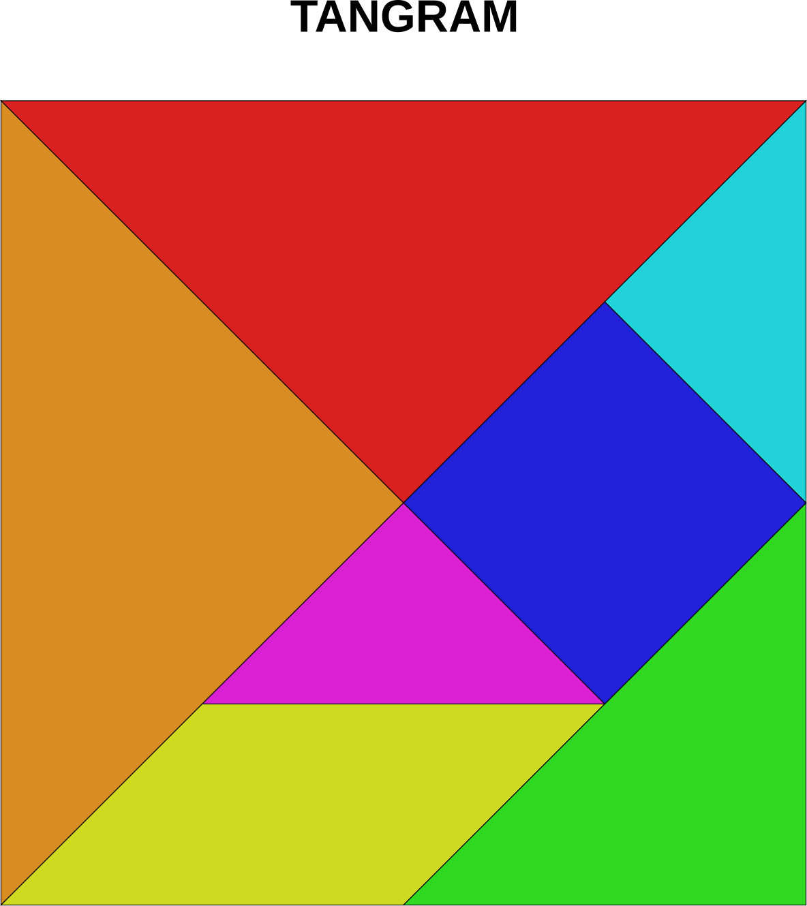
: Descarregueu: Tangram amb peces unides. Format PDF. <Workshop/Workshop-01.pdf>
: Descarregueu: Tangrama amb peces separades. Format PDF. <Workshop/Workshop-02.pdf>
: Descarregueu: Tangrama amb peces unides i de colors. Format PDF. <Workshop/Workshop-03.pdf>
: Descarregueu: Tangram amb peces unides. Format SVG. <Workshop/Workshop-01.svg>
: Descarregueu: Tangrama amb peces separades. Format SVG. <Workshop/Workshop-02.svg>
: Descarregueu: Tangrama amb peces unides i de colors. Format SVG. <Workshop/Workshop-03.svg>
Figures amb tangrama¶
Exemple de figures fetes amb el tangrama.
{kind=link}
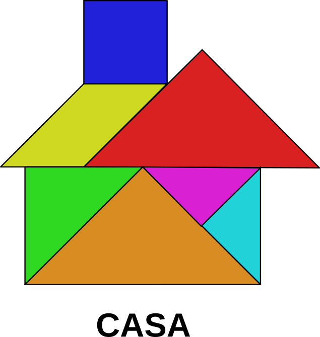
{kind=link}
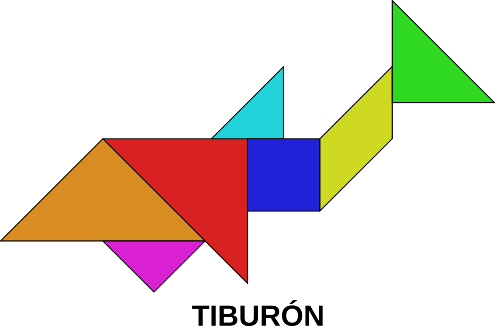
{kind=link}
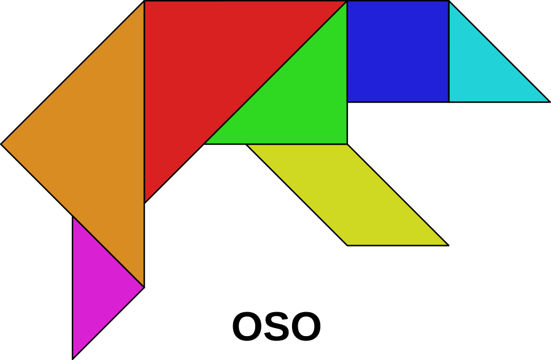
{kind=link}
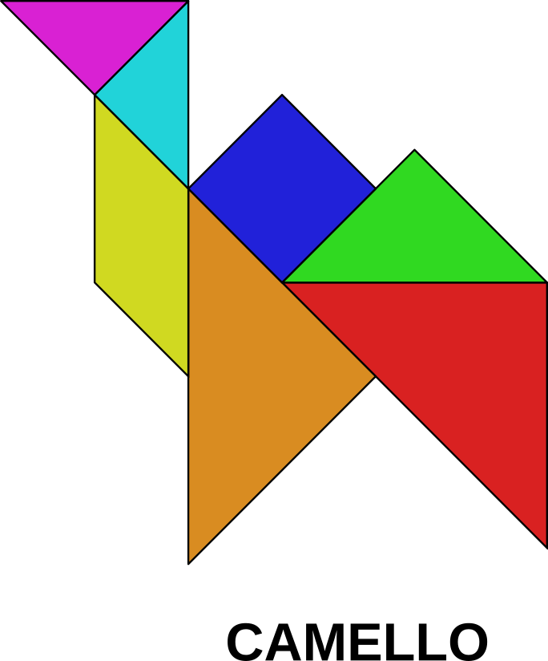
{kind=link}
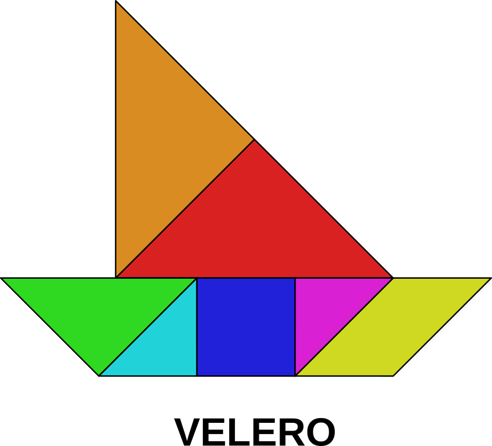
{kind=link}
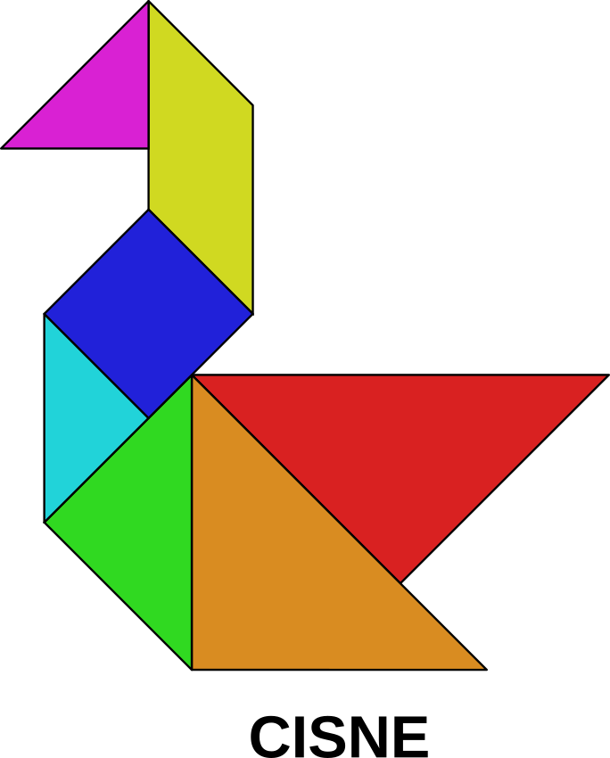
{kind=link}
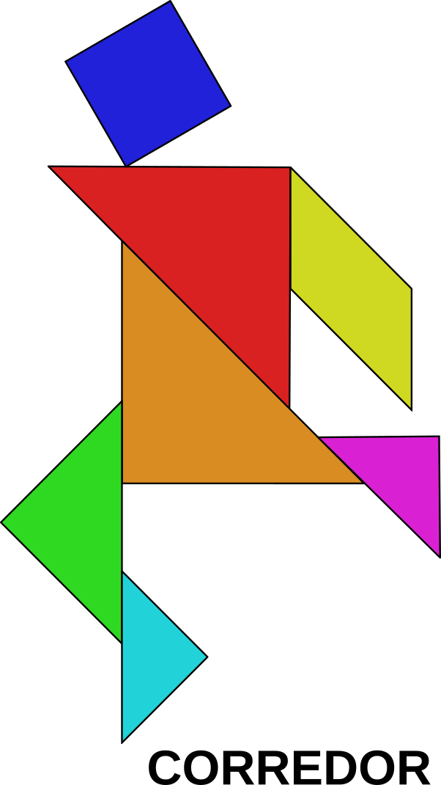
{kind=link}
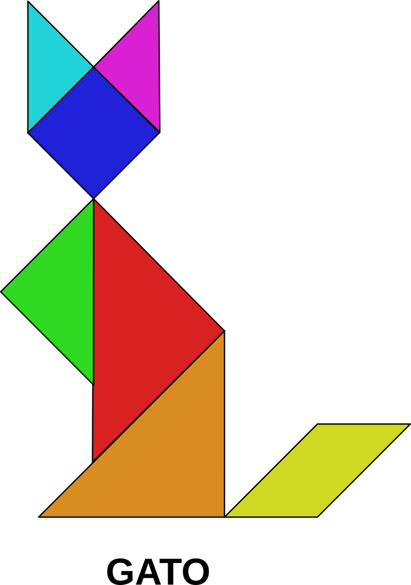
{kind=link}
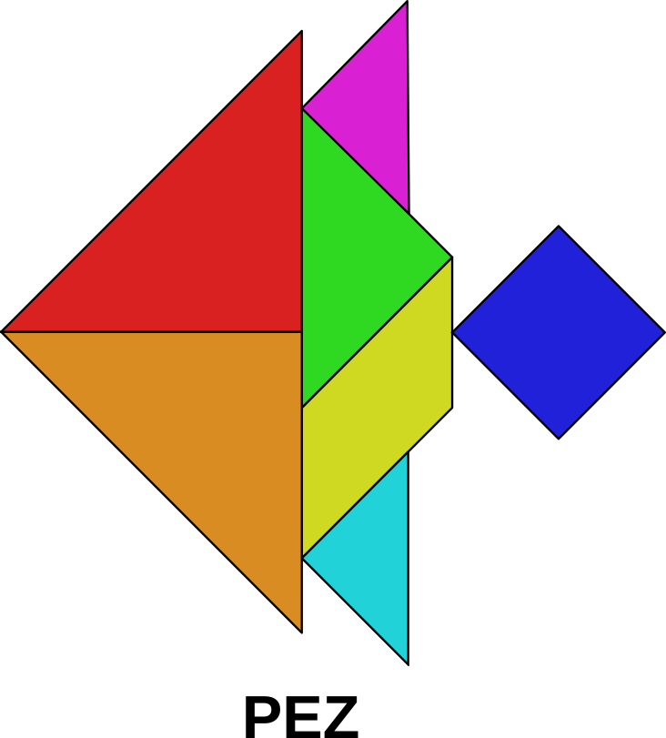
{kind=link}
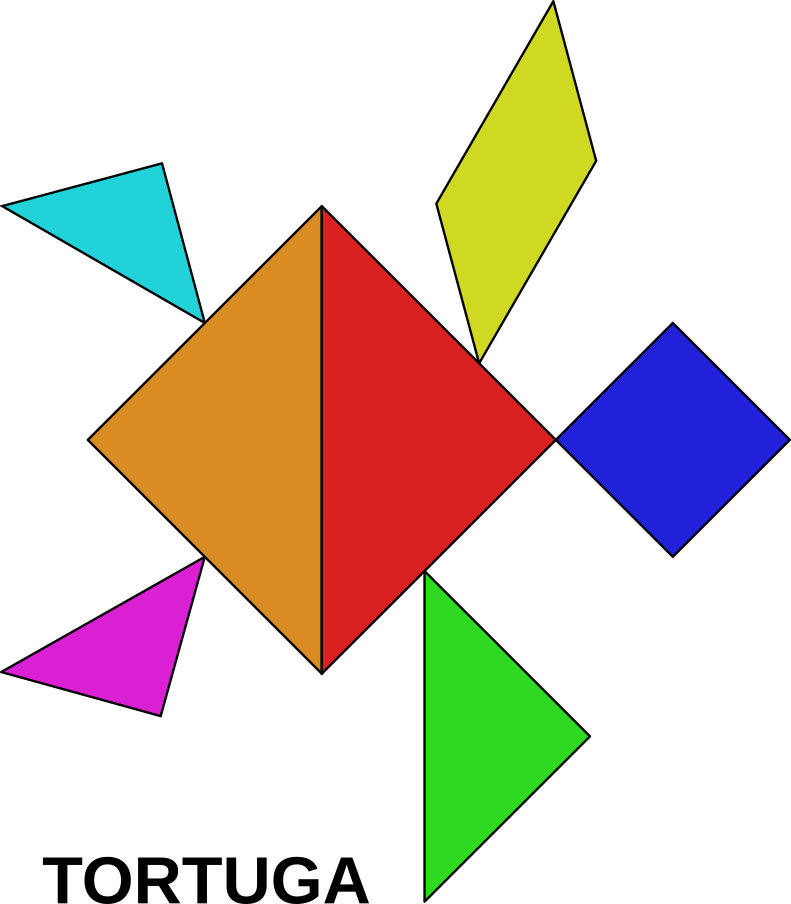
: Descàrrega: Figures amb Tangram. Format PDF. <Workshop/Workshop-04.pdf>
: Descàrrega: Figures amb Tangram. Format SVG. <Workshop/Workshop-04.svg>